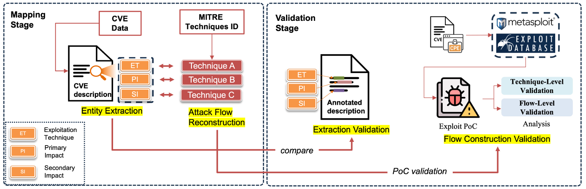
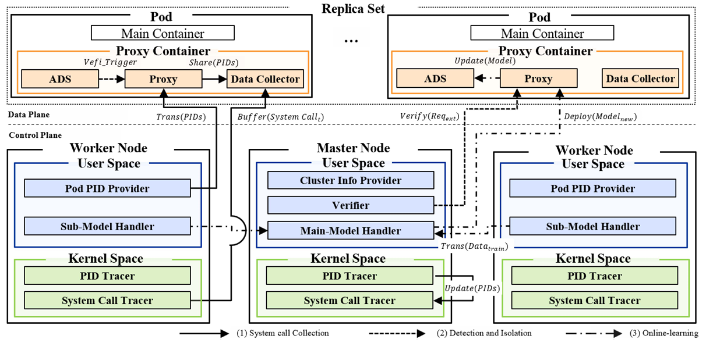
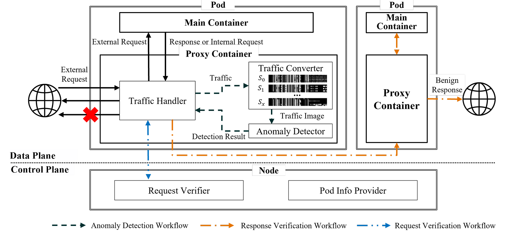

VPD 제어 최적화를 위한 구축형 Multi-SLM 기반 AI 에이전트 고도화
회로 설계 환경의 보안성과 확장성 확보를 위한 Multi-SLM 기반 AI Agent 시스템 아키텍처 고도화 연구
PORTFOLIO
정재영 · 부산대학교 정보융합공학과 컴퓨터공학전공 석사과정
2001. 02. 11
회로 설계 환경의 보안성과 확장성 확보를 위한 Multi-SLM 기반 AI Agent 시스템 아키텍처 고도화 연구
전문가의 수동 개입을 줄이며 VPD 전 과정을 자동화 및 최적화하기 위한 AI Agent 개발
클라우드 자산 토폴로지 기반 위험 분석 및 대응 지원 시스템(SecurityHero RMF Console)에서 자산의 위험을 평가하는 기능 개발
환경 IoT 센서 데이터 수집 및 서비스 연동 애플리케이션 개발을 위한 기업 요구 사항 분석 및 기술 컨설팅
“암환자의 자살행동 예방을 위한 SOFTER 중재 기반 디지털 치료제 SAVE의 개발 및 효능 검증” 연구를 위한 웹 소프트웨어 개발
전문가 경험 기반 반복 시뮬레이션에 의존하던 VPD 제어 과정에서, 회로 설계 변수 최적화 문제를 체계적으로 해결하는 자동화 구조 설계
데이터 보안 및 사내 환경 제약을 고려하여 외부 의존 없이 동작하는 구축형 설계 자동화 시스템 아키텍처를 설계하고, 다중 작업을 안정적으로 처리할 수 있는 확장형 구조 구축


